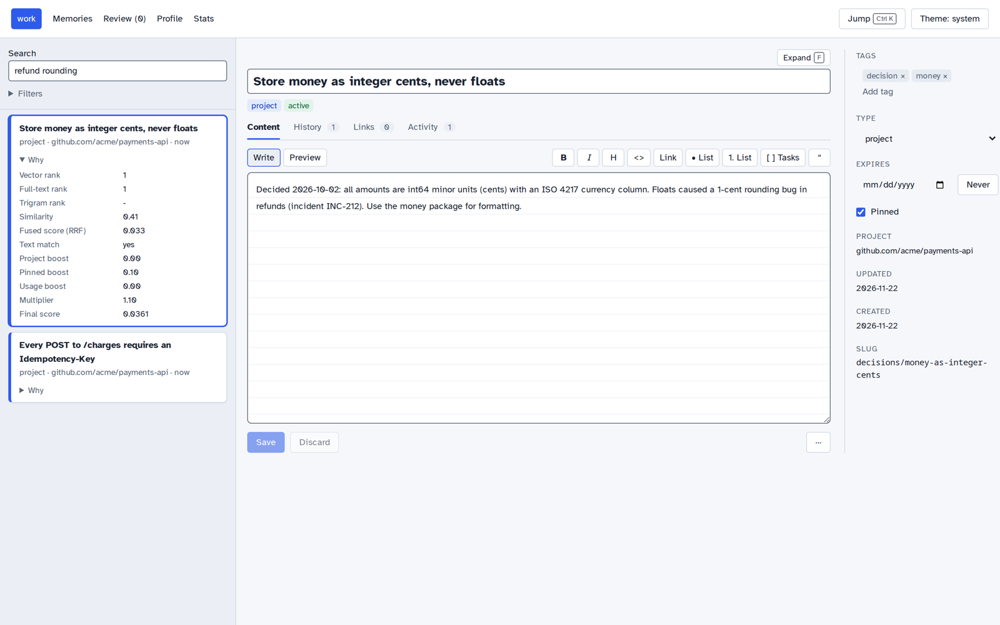

Claude Code starts every session from scratch. memorable is a local MCP server that lets it save decisions, preferences, and project facts as it works, and puts the relevant ones in front of it before it answers your next prompt.
curl -fsSL https://raw.githubusercontent.com/constantine-kostikas/memorable/main/install.sh | shThen run memorable setup. macOS or Linux, with Docker and Ollama. MIT licensed. The memory store and embeddings run locally.
On every prompt, a hook searches your memories and hands Claude up to three pointers with a calibrated relevance score. Claude fetches the ones it needs. Pick a prompt to see what Claude receives.
Real, unedited output of memorable hook prompt-submit, recorded against a demo database of ten example memories for a fictional payments service.
memorable ui opens a local workspace: search with a per-result score breakdown, edit in Markdown, compare any two versions, review flagged and stale memories.

Vector similarity from a local embedding model, fused with Postgres full-text and trigram matching, plus boosts for the current project, pinned, and frequently used memories.
Your top memories at session start, and relevant pointers on each prompt. Most prompts get none: recall stays quiet below 70% relevance.
Separate contexts such as work and personal, each its own schema, with per-project memories inside. A session only sees its own context.
Secrets are rejected on write. Text that looks like a prompt injection is quarantined until you approve it. Deletes are soft and every change is versioned.
Slugs like infra/db-port, tags, links between memories, and types for user, feedback, project, and reference facts.
Postgres with pgvector in Docker and Ollama, both on 127.0.0.1. Updates check a GPG signature before replacing the binary.
Claude Code's built-in memory needs no setup and is the right start for small projects. claude-mem captures whole sessions automatically. memorable is for curated facts you want found reliably across many projects.
| Built-in memory | claude-mem | memorable | |
|---|---|---|---|
| What is stored | Markdown notes per project | Compressed summaries of session activity | Individual facts, decisions, and preferences |
| How it is found | An index file loaded at session start; Claude reads the files | An index of relevant observations at session start, plus keyword and semantic search tools | Hybrid search, and per-prompt recall with a relevance score |
| Storage | Files in ~/.claude | SQLite, with Chroma for semantic search | Postgres with pgvector |
| Scope | Per project | Per project | Contexts by directory, projects within them, and a shared profile |
| History and safety | Plain files you can edit | <private> tags keep content out of storage | Versioned, soft deletes, secret scan, injection quarantine |
| Setup | None | npx installer or plugin, with Node, Bun, and uv | One binary and memorable setup, with Docker and Ollama |
curl -fsSL https://raw.githubusercontent.com/constantine-kostikas/memorable/main/install.sh | sh, or brew install --cask constantine-kostikas/tap/memorable on macOS.memorable setup. It shows every change as a diff and asks before applying it: the database container, the embedding model, the MCP server registration, and the optional hooks.